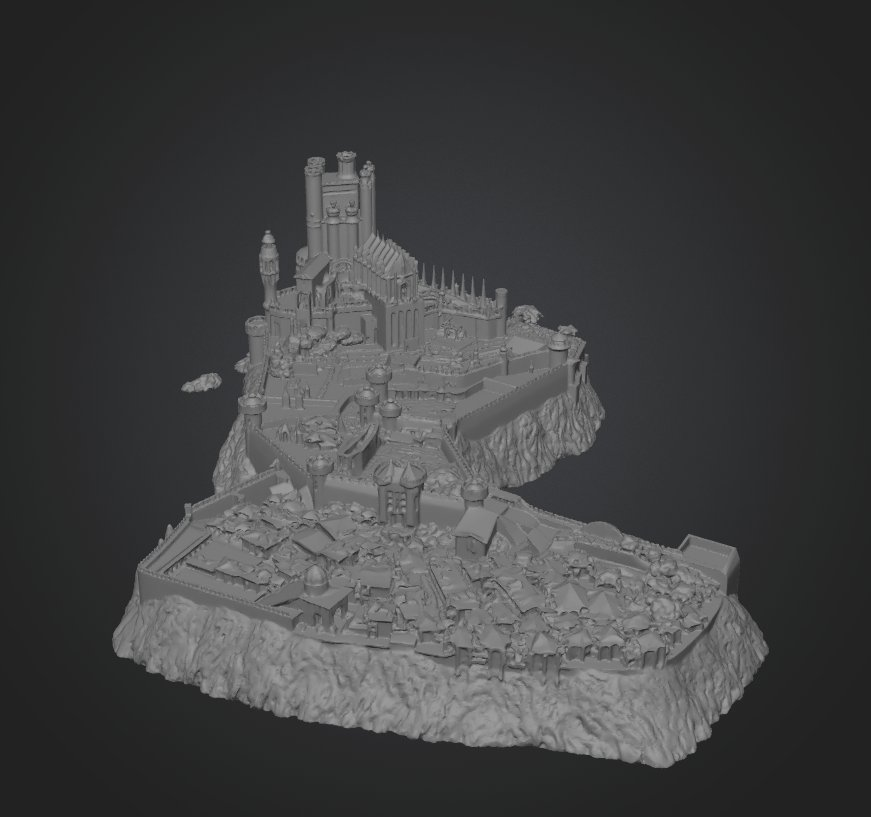
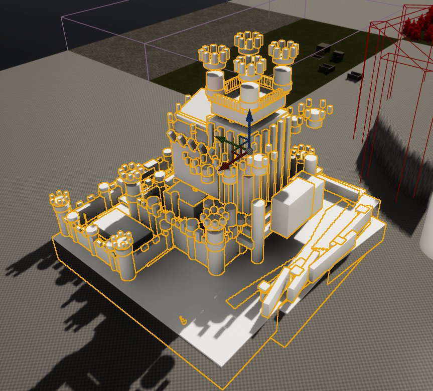
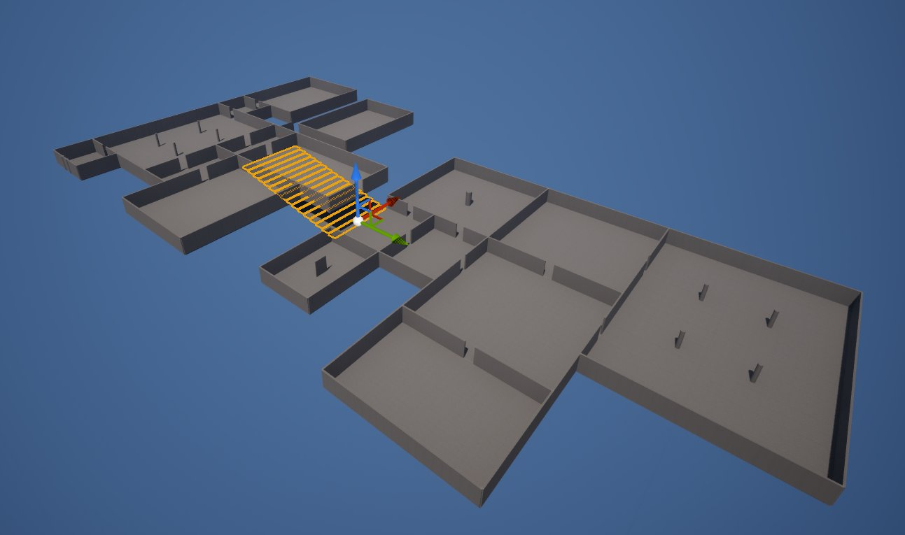
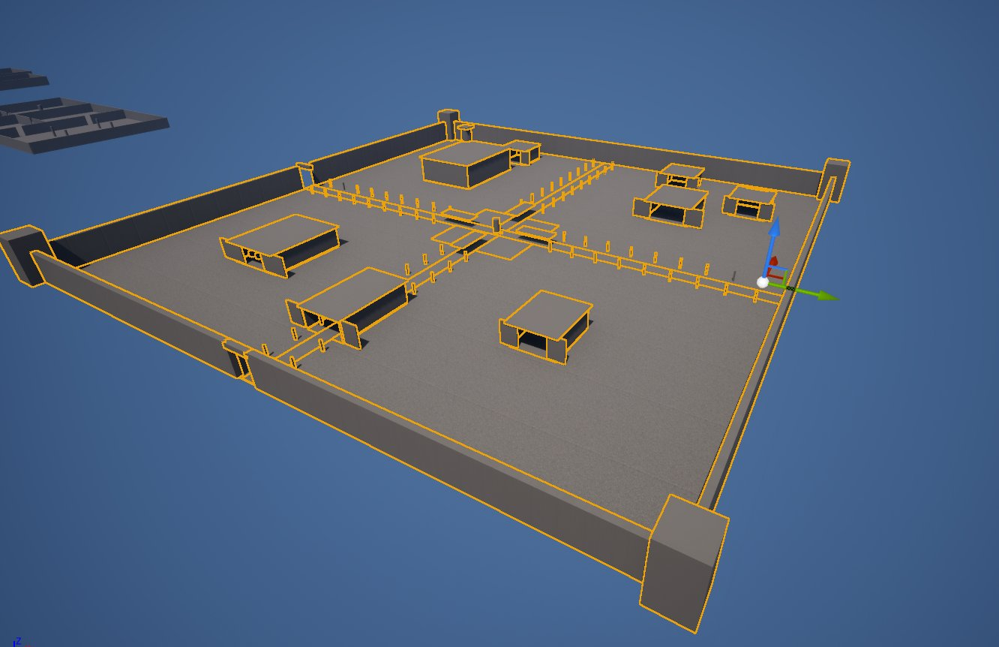
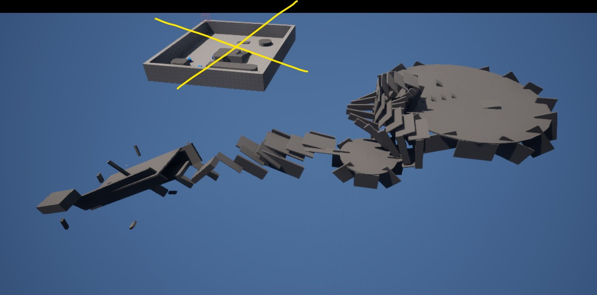
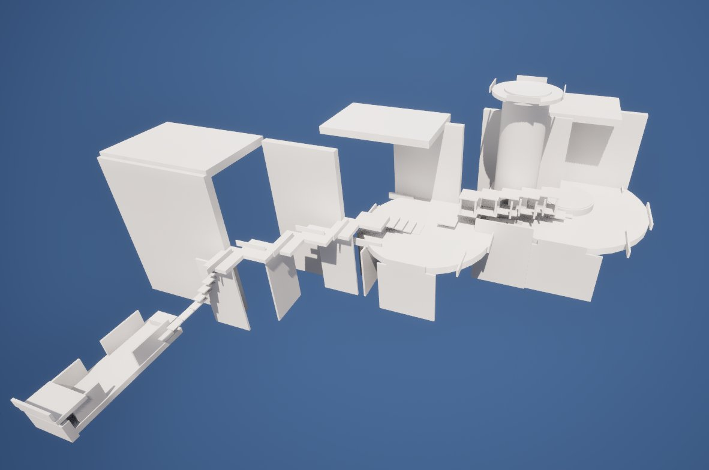
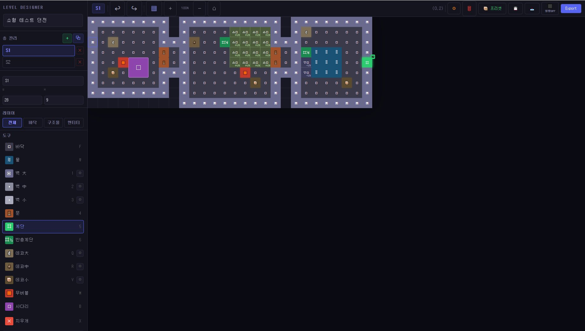
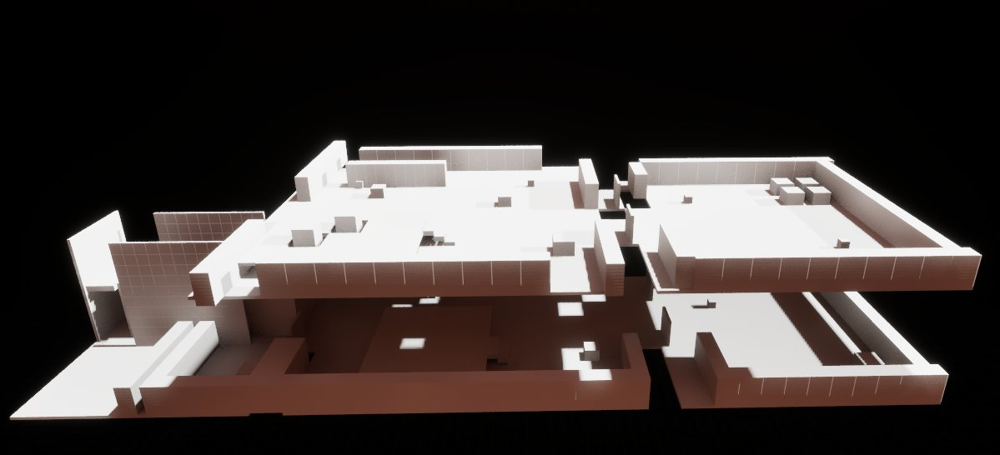

왜 단일 메시 생성 AI로는 안 되는가
3D 모델링 AI는 이미 많습니다. 그러나 레벨 기획에 필요한 건 그럴듯한 모델 하나가 아니라, 여러 모듈로 구성된 공간을 만들고 그것을 세밀하게 조정해 나가는 것입니다. 그래서 먼저 이미지와 자연어를 T3D 포맷으로 변환하는 툴을 직접 만들어 봤습니다. 외형은 그럴듯했지만 플레이 공간을 전혀 고려하지 않은 결과물이라, 오히려 고치는 데 시간이 더 들었습니다.


Aura를 채택한 이유와, 그 한계
조사 중 언리얼 엔진 플러그인 Aura를 발견했습니다. 직접 만든 툴과 컨셉은 비슷했지만 완성도가 훨씬 높았습니다. 에디터 안에서 액터를 직접 수정하거나 선택한 액터에 명령을 줄 수 있고, 자체적으로 뷰포트를 보며 결과를 검증하는 기능까지 갖추고 있습니다.
다만 그럴듯한 목업은 만들어도, 기획 의도를 정확히 반영한 목업은 만들지 못합니다. 계단실이나 곡선 구조 같은 복잡한 형태에 특히 취약합니다. 대략적인 구성을 잡는 용도로는 충분히 쓸 수 있습니다.


한계를 넘기 위한 시도
- 01
Meshy AI로 이미지를 3D OBJ로 변환해 입력
Aura 입력으로는 실패. AI가 바닥 · 지형 · 천장 · 기둥 같은 공간 요소를 전혀 구분하지 못해 의도와 완전히 다른 목업이 나왔습니다. 다만 이 결과물은 나중에 다른 쓸모를 찾았습니다 (아래 ‘Meshy AI — 밑그림으로 쓰기’).
- 02
평면도와 기획서를 그대로 입력
부분 성공. 크라켄 던전으로 테스트하며 프롬프트를 계속 다듬었지만, 자연어와 이미지 조합만으로는 기획 의도를 정확히 전달하는 데 한계가 있음을 확인했습니다.
- 03
평면도 제작 전용 툴을 직접 제작
채택. PowerPoint나 Photoshop으로 그린 평면도는 AI가 제대로 인식하지 못했습니다. 그래서 픽셀 단위로 평면도를 그려 구조화된 데이터를 뽑는 툴을 만들었습니다. 이 데이터를 Claude가 Markdown / JSON으로 변환하고, Aura에 넣으면 기획 의도가 반영된 목업이 나옵니다.


확립된 파이프라인


Meshy AI — 밑그림으로 쓰기
Aura에 넣을 입력으로는 실패했지만, 사람이 보고 따라 만드는 밑그림으로는 잘 맞았습니다. 레퍼런스 이미지를 Meshy AI로 3D 메시로 뽑아 뷰포트에 깔아 두고, 그 위에서 규격에 맞게 목업을 세웁니다. 비율과 실루엣을 처음부터 손으로 잡을 필요가 없어지고, 배경팀과 컨셉을 맞추는 대화도 빨라집니다.
생성물을 그대로 쓰는 것이 아니라 밑그림으로만 쓰는 것이 핵심입니다. AI 결과물은 플레이 공간을 모르지만, 형태의 감을 잡아 주는 데는 충분합니다. 이 방식으로 목업 제작 효율이 50% 이상 올라갔습니다.
무엇이 좋아졌나
- 규격화된 목업 — 기존 목업은 거의 자유형이라 배경팀이 모듈화하기 어려웠습니다. 이제 완전히 규격화된 목업이 나와 후속 작업 효율이 크게 올랐습니다.
- 수정 비용 — 액터를 전부 잡아 돌리고 이어 붙이던 작업이, 평면도만 고쳐 다시 생성하는 것으로 바뀌었습니다.
- Outliner 자동 정리 — 생성 시 폴더 구조가 자동으로 잡혀 수정할 지점을 찾기 쉽습니다.
- 이미지 기반 데코 — 목업의 특정 지점에 참고 이미지를 붙이면 분위기에 맞는 데코를 추가하고, 기존 목업을 감싸는 대형 구조물도 만들어 줍니다.
- 성과 — 업무 기록 기준 목업 제작 시간이 평균 31% 줄었습니다. 발산이 필요한 컨셉 기획 단계에서 40%로 가장 컸습니다.
남은 한계
- Z축 — 평면도 기반이라 경사로처럼 Z축 변화가 필요한 요소는 표현이 어렵습니다. 이 부분은 사람이 직접 수정하는 편이 빠릅니다.
- BSP · 스플라인 미지원 — 나선형 계단, 첨탑 같은 복잡한 형태는 아직 구현이 어렵습니다.
- 프로젝트 전용 BP · 머티리얼 — 사다리 · 문 · 기믹 · 폴리지 같은 고유 리소스를 인식하지 못합니다. 평면도 툴에서 타일 타입별로 리소스를 연결할 수 있게 하는 것이 다음 과제입니다.
- 잔존 버그 — 계단 메시 방향 오정렬, 인접 벽 이음새 들뜸.